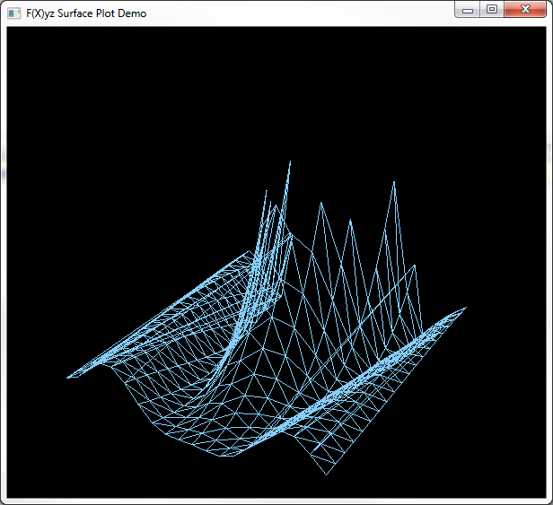
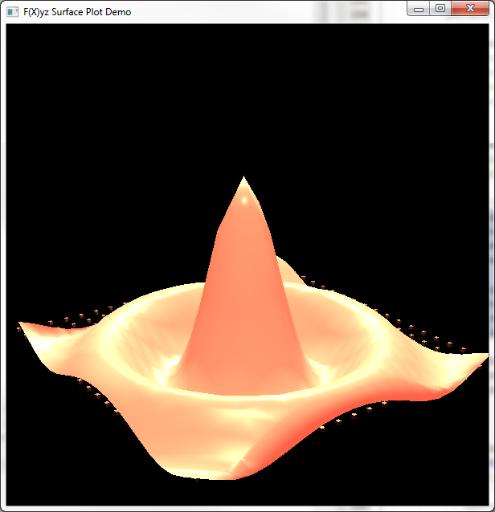
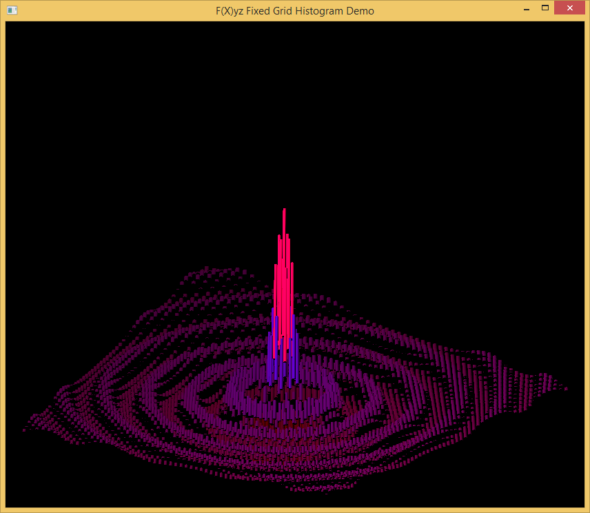
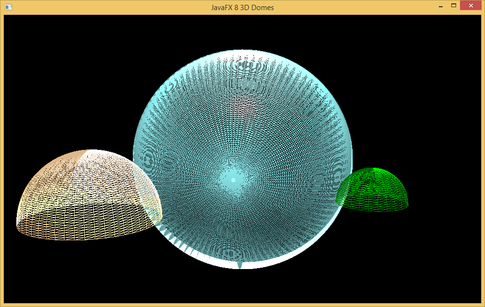
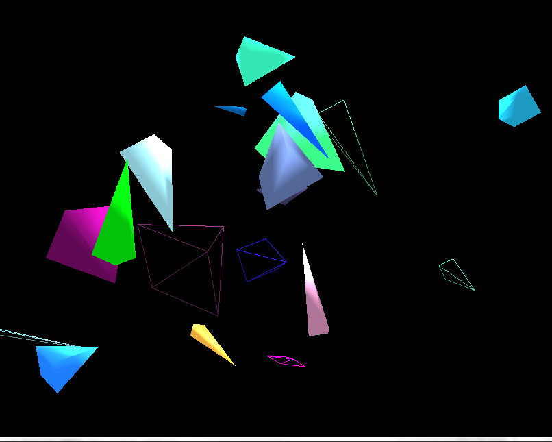
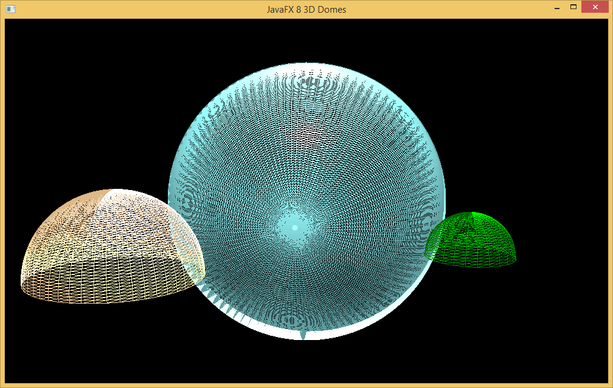
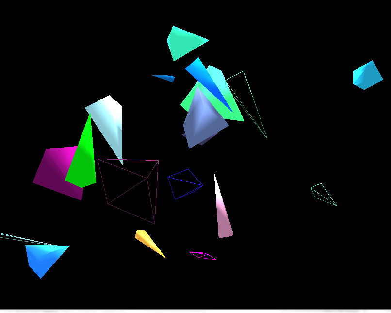

Welcome to F(X)yz
F(X)yz is a new JavaFX 3D library that provides additional primitives, composite objects, controls and data visualizations that the base JavaFX 8 3D packages do not have.
 

Features
- PolyLine3D with adjustable width
- Cones
- Pyramids
- Thick Rings
- Domes and Sphere Segments
- Surface Plot
- Fixed Grid Histogram
- Bounding Box Tool (In Development)
We (and by we I mean me) have just fired up the first GitHub Page here so clearly we have some work to do. We will be releasing the binary library for F(X)yz along with some demo code to use it soon. Until I get some more time, you can see early screenshot previews over at our tumblr:
Sometimes I use Google Plus (because I like being alone sometimes)
Authors and Contributors
@Birdasaur (Sean Phillips) can be found on twitter at @seanmiphillips.